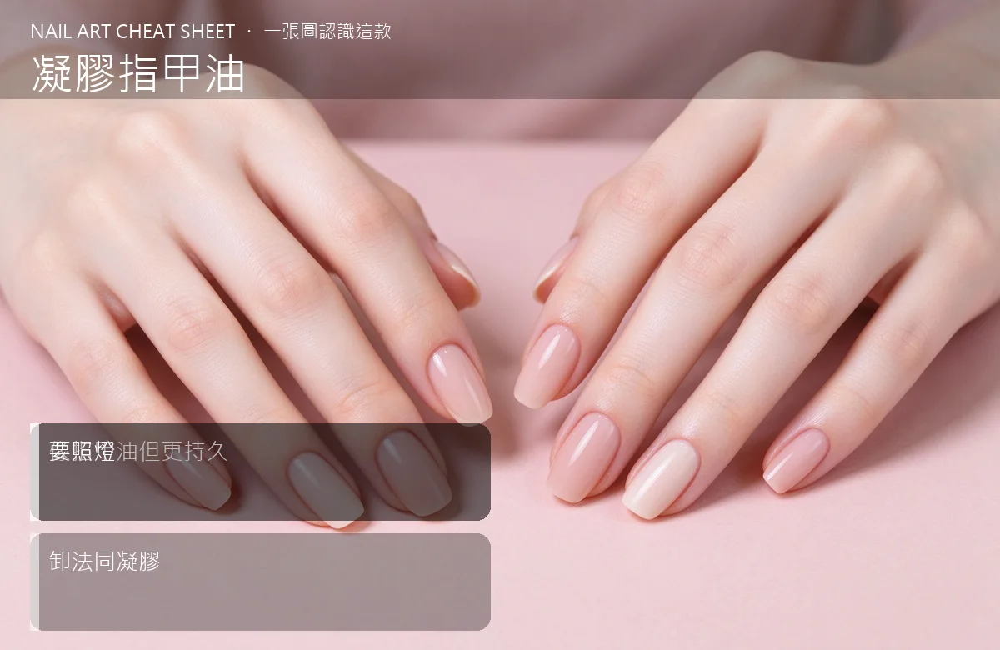

美甲凝膠指甲油是什麼？入門入門攻略
長得像指甲油、乾法像光療，是 Gel Polish 的精髓——好刷、持久、但一定要照燈。
凝膠指甲油原理與辨識重點：美甲師不說的像指甲油但更持久
有沒有過出門前才發現指甲掉一角，慌慌張張在大眾運輸上補？Gel Polish 就是為這種煩惱誕生的：它把光療凝膠調成像指甲油那樣的稀稠度，刷子一刷就順，不用像傳統硬膠那樣講究厚薄。但它的靈魂還是凝膠——塗完一定要照燈才會固化變硬，不是吹風吹乾的。
誰適合做凝膠指甲油？在家DIY對號入座
想自己在家做、又懶得跑沙龍的人；怕厚重、喜歡指甲油那種輕盈手感的人，最愛這一款。
凝膠指甲油美甲施作步驟：免打磨凝膠指甲油
前置去油、輕磨甲面 → 薄上底膠照燈 → 上色膠兩層（每層都薄、每層都照）→ 封層照燈。重點跟一般凝膠一樣：薄層、包邊、每層照夠，不能偷懶。
凝膠指甲油優缺點分析：美甲持久度與傷甲評估
| 優點 | 說明 |
|---|---|
| 好刷好塗、對新手超友善，持久度能撐 2–3 週不掉色。 | 是歐美流派的招牌，入門就能上手 |
| 缺點 | 說明 |
| 因為稠度稀，要上色飽和得疊 2–3 層，不能一次壓厚。 | 前置與別以為它跟指甲油一樣『自然風乾』就出門。沒照燈，它到晚上還是軟的，一刮就花、一碰就留指紋。沒顧好會打折 |

凝膠指甲油新手雷區：要照燈與常見錯誤
注意：別以為它跟指甲油一樣『自然風乾』就出門。沒照燈，它到晚上還是軟的，一刮就花、一碰就留指紋。
凝膠指甲油和其他美甲做法的差別比較
跟一般指甲油比：它要照燈、要卸甲水泡，但持久好幾倍。跟傳統硬凝膠比：它更稀更好刷，但撐力弱，不適合做長延甲。
凝膠指甲油美甲常見問題 FAQ
Q：可以用一般指甲油方式卸嗎？ A：不行。它是凝膠，得磨薄表層後用卸甲水泡 10–15 分鐘，不能用去光水硬擦。
Q：在家做要準備什麼？ A：一支 LED 燈、底膠＋色膠＋封層，再備磨板和卸甲棉就夠開工，一開始顏色不用買太多。